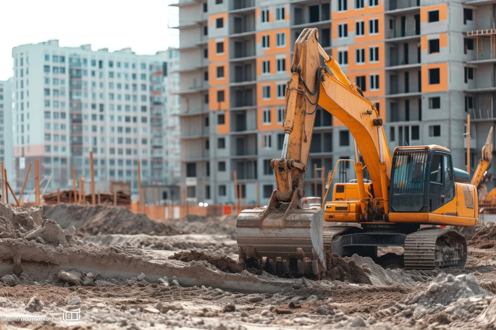

Row And Wet Zones
Machine rows and wet zones are marked before the floor layout is finalised.
Prachi Construction Projects builds waterjet loom sheds in Surat with water supply, drainage, floor falls and a clear split between wet and dry areas. Call +91 76004 90851 with your machine layout for a written estimate.
A waterjet loom uses water in the weaving process. That single fact changes the building: water must arrive at each row, leave the floor quickly and never cross a dry walking or storage route. The civil work has to be right before machines are installed. Our waterjet requirements guide covers water, drainage and floor checks.
We work from your layout and plan supply lines, channels, floor falls, finishes and safe movement between rows. Start with the textile construction guide, then see gala units, airjet sheds, loom foundations and cost factors.
Browse our projects or contact us with your plot and machine layout.
The Civil Work Connects Several Small Decisions.
Machine rows and wet zones are marked before the floor layout is finalised.
Pipe routes and sleeves are built into the structure and floor from the start.
Falls are set toward channels so water does not stand near machine bases.
Collection routes are aligned with rows and kept clear of operator paths.
Materials and finishes are chosen with regular water contact in mind.
Dry aisles and crossings remain separate from channels and wet floor areas.
A clear sequence that keeps drainage and flooring in step.
Send your row layout and the water and discharge needs you know.
We check levels, access and where water and drains can be taken.
Wet zones, falls, channels and supply lines are fixed together.
Structure, channels and flooring are built in the agreed order.
Falls, drains and access are walked through with you at the end.

Each point below is settled with your supplier or designer.
[CONFIRM WITH OWNER: machine types and counts handled]

We focus on the places where water and building meet.
[CONFIRM WITH OWNER: approved material brands and test reports]
[CONFIRM WITH OWNER: approved real waterjet loom shed photos and captions]
The floor can only be closed once water details are settled.
Supply points, slopes and drains must be fixed before flooring begins.
Soil and rain affect excavation and concrete work.
Pump and discharge points must be ready before the system is used.
Shifting a channel after flooring means breaking finished work.
[CONFIRM WITH OWNER: typical timeline for a waterjet loom shed]

This work suits units where water at the machine is part of daily production.
For wet process buildings see processing house civil work. Browse projects or contact us.
We take up textile shed work across Surat and nearby industrial belts.
[CONFIRM WITH OWNER: confirmed service areas]
Practical questions from owners planning a waterjet unit in Surat.
Tell us about your plot, machines and timeline. We will give you a clear written estimate and a practical build plan.